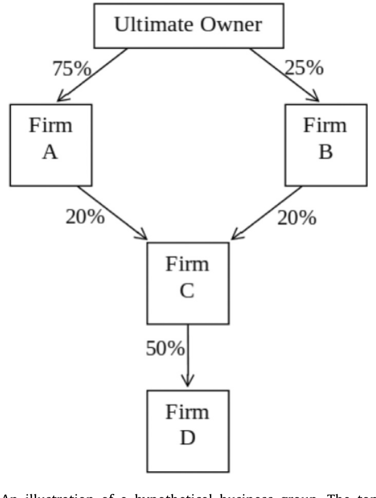
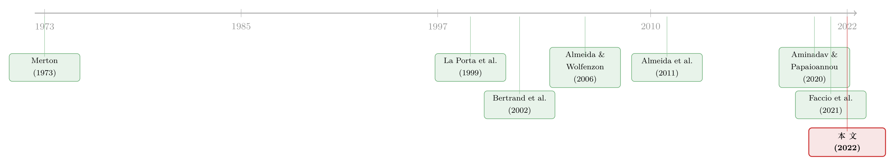

被「保护」起来的核心公司，为什么反而更便宜？
本文读的是 Massa, O'Donovan & Zhang (2022, Journal of Financial Economics)：在全球市场里，很多上市公司并不是「独立实体」，而是同属一个商业集团；坏年景里，集团会战略性地把风险从核心公司转移到外围公司、把资源调向核心公司。这种「护核心」的行为让核心公司被系统性地保护起来——于是它们的风险更低、预期收益也更低，并由此衍生出一个传统美国因子模型抓不到的跨期风险因子（centrality factor）。
1 一个被教科书悄悄假设掉的前提
打开任何一本资产定价的教科书，第一页几乎都默认了一件事：不同公司的股票，是对彼此独立的实体资产的索取权。A 公司的命运不会因为 B 公司而改变，所以我们可以一只一只地给它们定价，再用 CAPM、用 Fama-French 三因子或五因子把横截面收益解释清楚。
这个前提，对美国上市公司大体是成立的——美国从 1930 年代起就在政策上压制商业集团的形成（见 Kandel et al., 2018）。可一旦走出美国，它就开始失灵。智利约有五分之一的公司、印尼则有三分之二的公司隶属于某个商业集团（Khanna and Yishay, 2007）。在全球市场里，「独立公司」反而是例外，不是常态。
于是一个很自然的问题浮出水面：如果一只股票背后站着的不是一家独立公司，而是一个会替它「调度风险」的集团，传统那套从美国土壤里长出来的定价模型，还管用吗？
本文的回答是：不完全管用。而且不管用的方式，相当有意思。
2 先看一个意大利家族的账本
为了把抽象的「集团调度风险」讲具体，先看论文里举的一个真实例子：意大利大亨 Carlo De Benedetti 和他家族控制的集团。
这个集团里有一家叫 Cofide—Gruppo De Benedetti SpA 的公司。从它身上，家族能拿到全集团 38% 的现金流权（cash flow rights）——是分钱最多的那家。但如果问「丢掉对这家公司的控制，家族会连带失去多大一块集团？」答案只有 20%。
真正要命的是另一家：CIR SpA。家族从它身上只拿 35% 的现金流权，比 Cofide 还少；可一旦失去对 CIR SpA 的控制，家族会连带失去整个集团 56% 的资产。
拿钱最多的公司，和「丢了它就垮一半」的公司，往往不是同一家。前者关乎分红，后者关乎控制权。本文整篇文章的张力，就藏在这个错位里。
论文把后一种重要性，提炼成一个新的度量——中心度（centrality）。

Figure 1: An illustration of a hypothetical business group. The top box is
3 中心度：把「失控的代价」写成一个数
首先，得把「这家公司对集团有多重要」量化出来。作者沿用 Almeida et al. (2011) 的思路，再叠加 Aminadav and Papaioannou (2020) 基于 Shapley-Shubik 投票权指数（Shapley and Shubik, 1954）的博弈论方法来确定控制关系，定义了如下的中心度：
其中 \(Value_i\) 是公司 \(i\) 的股权市值，\(Value_{UO}=\sum_{i\in Group\,G} Value_i\) 是集团内所有公司市值之和。
读懂它的关键，是体会「反事实」三个字。中心度不是问「这家公司值多少钱」，而是问：如果终极所有者（ultimate owner）失去了对这家公司的控制，他会连带失去对多大一块集团资产的控制？ 数值落在 $(0,1]$ 之间。某家公司中心度 = 0.5，意思就是丢了它，所有者会一口气失去占集团 50% 价值的那批公司的控制权。回到上面的例子，CIR SpA 的中心度正是 0.56。
注意它和两个传统度量的区别。一个是 E1：终极所有者持股比例最高的那家公司（本文当作中心度的替代变量做稳健性检验）。另一个是 E2：凭直接或间接持股拿到现金流权最多的那家——它常被集团用作「提款机」（extractor），即隧道挖掘（tunneling）的出口。中心度关心的是控制权的存续，这恰恰是集团所有者最在乎的东西，也是后文一切故事的发动机。
4 识别策略（上）：核心公司，真的在坏年景被保护了吗？
有了度量，接着一个自然的问题是：所谓「集团会保护核心公司」，是真的能在数据里看见，还是只是一个讲得通的故事？
作者分三步把它钉死，层层加码地解决内生性。
第一步，行业冲击。 借用 Bertrand et al. (2002) 「揪出隧道挖掘」的框架，看一家公司遭遇未预期的负向行业冲击时，市净率（market-to-book）受多大打击，以及中心度能不能缓冲这种打击。结论是：中心度每上升一个标准差，能抵消负向冲击对市净率影响的 11% 到 12%。也就是说，同样一记闷棍，越靠近集团核心的公司，挨得越轻。
第二步，大宗商品冲击。 沿着 Faccio et al. (2021) 更新的做法换一类外生冲击，结论一致：中心度同样能缓冲大宗商品冲击的不利影响。
但真正关键的一步，是第三步——主权评级下调。 前两步总有一个隐忧：会不会有某个遗漏变量，同时驱动了公司价值和我们观察到的「冲击」？为堵住这个口子，作者借了一个更干净的外生冲击：Almeida et al. (2017) 发现，当一国主权债被下调评级时，那些信用评级原本高于下调后主权上限的公司，融资成本会显著上升（即所谓「主权天花板渠道」）。作者发现，这种冲击对核心公司的负面影响被显著地削弱了。
于是反转出现：核心公司不是恰好没被冲击波及，而是被集团有意识地挡在了身后。
5 识别策略（下）：被保护，就意味着更便宜
到这里，故事讲完了一半。坏年景里被保护的公司，风险更低——按资产定价最朴素的逻辑，风险更低，预期收益就该更低、价格就该更高。这是本文最核心的可证伪预测。
作者把中心度和样本外的股票收益放在一起看，用的是 Daniel et al. (1997) 的 DGTW 特征调整收益。在控制了规模、账面市值比、动量等公司特征之后，用 Fama and MacBeth (1973) 回归得到：中心度每上升一个标准差，对应未来每月低 14（控制更严格时为 12）个基点的 DGTW 调整收益。方向、量级都和理论一致。
为了进一步称量这块「中心度风险溢价」，作者又做了组合分析，分两种排序：
- 无条件排序：在全样本横截面上按中心度排。高中心度组合减低中心度组合的四因子调整收益之差，是每月
−67个基点。 - 条件排序：只在「各自集团内中心度最高」的那批公司里比。价差缩小到每月
−36个基点。
两个都在经济上和统计上高度显著。无论怎么切，越靠近核心，收益越低这条规律都站得住。
6 但故事还没完：一个全新的跨期风险因子
读到这里，你可能会想：不就是「低风险、低收益」吗，老生常谈。
但真正让这篇论文从一篇公司金融实证、升格为一篇资产定价论文的，是下面这一步。
集团对核心公司的保护不是静态的——它在坏状态下才出手，在好状态下未必。这意味着集团动态地改变了旗下资产的风险轮廓，也就改变了投资者的投资机会集（investment opportunity set）。一旦投资者想对冲这种机会集的不利变动，按照 Merton (1973) 跨期资本资产定价模型（intertemporal CAPM, ICAPM）的逻辑，就会冒出一个新的跨期风险因子。
Merton (1973) 当年用一个状态变量（利率）演示：只要某个变量同时影响所有资产的收益分布、从而搅动投资者的机会集，就能用一个与该状态相关的资产收益来代理出一个风险因子（即模型里的「第 n 个资产」）。本文的论点是：商业集团的战略调度，扮演的正是这个角色。 作者用一个「核心减外围」(central minus peripheral) 的模仿组合 (mimicking portfolio) 来代理这个因子，称之为中心度因子。
这个因子的来历，正是国际市场和美国市场的根本差异所在。独立公司没有「额外的集团储备」可以在坏状态里腾挪（它们只能用衍生品等金融工具管理风险），所以这个因子在美国市场里并不存在。它是「集团化」这个组织特征的副产品。
那么，这个新因子是「多此一举」，还是真有增量解释力？作者用了两套不依赖测试资产的现代方法来回答：Barillas and Shanken (2018) 的贝叶斯资产定价检验，以及 Barillas et al. (2020) 的平方夏普比率检验。结论很硬：贝叶斯检验挑出的最高后验概率模型，包含中心度因子；在夏普比率比较里，这个含中心度因子的设定击败了所有其他因子模型，包括国际 CAPM、国际 Fama-French（Fama and French, 2012），以及加入了中介与不确定性代理变量的模型。
7 把另外几种「嫌疑」逐一排除
一个好的实证故事，要经得起「会不会其实是别的东西」的盘问。作者排了三个最像的嫌疑：
会不会是融资流动性风险？ 也许集团把「外部融资枯竭」当成坏状态，靠外部资本来护核心。作者把 He et al. (2017) 的中介资本、VIX、违约利差这些常见的融资流动性代理拿来检验——它们既解释不了中心度因子，也不影响它在贝叶斯检验里的显著性。融资流动性风险，出局。
会不会是隧道挖掘 / 时变的掏空动机？ 商业集团臭名昭著的一点就是借关联交易掏空中小股东。会不会「核心公司」的现象，其实是掏空动机在时间上变来变去？作者顺着文献（Bae et al., 2002；Bertrand et al., 2002 等）识别出「提取者」(extractor，即 E2)——最可能接收被掏空资产的那批公司，发现核心公司的影响和提取者截然不同。掏空和现金流转移，不是这个跨期因子的主要推手。
会不会换个控制度量结论就变？ 作者用 E1（所有者持股最高的公司）替代中心度重做，得到相似但更弱的结果。这反过来印证了：中心度之所以更强，正因为它直接刻画了「失控的反事实代价」，更贴近所有者真正的战略动机。
8 文献脉络
把这篇论文放回它生长的土壤里，会看得更清楚。
最早的一支，是关于全球公司所有权与控制的描述性研究：La Porta, Lopez-de-Silanes and Shleifer (1999) 摸清了世界各国公司的所有权图景，Faccio and Lang (2002) 则刻画了西欧公司的终极所有权。接着，研究转向金字塔结构为什么存在、有什么后果：Almeida and Wolfenzon (2006a, 2006b) 给出了金字塔式控股的理论，Bertrand et al. (2002) 则用印度集团的数据，开创性地「揪出」了隧道挖掘。再往后，Almeida et al. (2011) 用韩国财阀的数据提出了中心度的雏形，Aminadav and Papaioannou (2020) 则把全球控制关系的识别方法推到了新高度——这两篇正是本文度量的直接来源。

而另一条更老的支流，来自资产定价的源头：Merton (1973) 的跨期 CAPM。这条线一直流到 Faccio, Morck and Yavuz (2021)——他们关心的是公司特质冲击如何被并入股价。本文做的，是把这两条原本各走各路的河汇到一起：用一个公司金融的事实（集团战略护核心），生造出一个资产定价的因子（跨期风险）。这个嫁接，正是它的novelty所在。
值得一提的是，本文也和「共同所有权」(common ownership) 那条线对话。集团的终极所有者，某种意义上就是旗下公司的共同所有者。Bartram et al. (2015)、Anton and Polk (2014) 证明机构投资者的共同持股能在摩擦下传播危机、制造价格联动；而本文强调的是另一条渠道——改变旗下公司之间的风险分布（关于共同所有权如何拖慢信息扩散，可参见《被「同一批股东」拖慢的消息》）。
9 数据
把数据交代清楚，这个故事才落地。
- 所有权数据：来自 Bureau van Dijk 的
Orbis数据库，覆盖全球公私上市公司，期间 2001–2013（中心度完整可得为 2002–2012）。起点是 150,343 家公司，其中 48,461 家来自 134 国的上市公司，101,882 家来自 190 国的私人公司，由 535,088 名股东持有。 - 集团定义：被同一终极所有者控制、至少含两家上市公司（外加任意数量私人公司）的实体。
- 会计/股价数据：会计变量来自 Bureau van Dijk、Datastream/Worldscope 和
Compustat；股价信息来自 Datastream/Worldscope。作者特意用持股比例把合并报表 / 权益法的口径「还原」回单家公司的真实资产与盈利（沿用 Almeida et al., 2011 的做法）。 - 最终样本：因为目标是看集团战略补充美国式模型的程度，分析聚焦非美国样本——
11,298家集团关联上市公司、5,443个商业集团、来自77个国家，共46,483个公司-年观测。
10 评论与延伸（Q&A + 研究方向）
(a) 几个可能的疑问
Q：中心度和「公司规模」「持股比例」到底有什么不同？会不会只是大公司换了个名字？
不同。规模回答的是「这家公司本身多大」，持股（
E1）回答的是「所有者在它身上压了多少注」，而中心度回答的是一个反事实问题：丢了它，会连带失控多大一块集团。一家自身不大、但卡在金字塔咽喉位置的公司，规模小、却中心度极高。论文也确实在控制规模、账面市值比、动量后，中心度仍显著负向预测收益。
Q：核心公司被「保护」，外围公司岂不是被牺牲了？这对外围股东公平吗？
关键要区分风险再分配和掏空。掏空是直接把财富从外围股东兜里转走，那是真实的福利损失。而风险再分配不等于掏空：如果这个跨期风险被市场正确定价，接过风险的外围公司会以更高的风险溢价得到补偿。所以在定价正确的前提下，外围股东并不吃亏——他们承担更多风险，也赚更多预期收益。
Q：为什么这个因子只在国际市场出现，美国就没有？
因为美国上市公司大多是独立实体，手里没有「集团储备」可供在坏状态里腾挪（政策上集团化也长期被压制）。独立公司只能用衍生品等金融工具管理风险。没有战略调度，就没有这个跨期因子。这恰恰是本文想强调的「国际 ≠ 美国」的根本差异。
Q：用「核心减外围」模仿组合来代理一个跨期风险因子，逻辑可靠吗？
这是 Merton (1973) 的标准操作：用一个与状态变量相关的资产收益，去代理那个无法直接观测的对冲需求。本文的论证是，这个价差恰好与集团的战略行为相关，因此可以充当 ICAPM 里的「第 n 个资产」。当然，模仿组合法本身有近似的成分——但作者特意避开了估计条件 beta 的两条路（见下条），选择模仿组合，是有取舍考量的。
Q：为什么不直接估计时变的条件 beta，而要绕道模仿组合？
论文坦白讲了两难。一条路让 beta 加载在可观测的滞后状态变量上，问题是集团的战略决策涉及大量外部不可得的信息，信息集天然不全（Hansen and Richard, 1987）。另一条路用短窗回归直接估实现 beta，但 Boguth et al. (2011) 指出，当收益对市场非线性时会有「过度条件化偏误」——而核心公司恰恰可能在下行市场里对市场收益呈凸性，正中这个偏误的下怀。两害相权，作者选了模仿组合，把条件 beta 留给未来研究（关于时变 beta 被长期低估，可参见《时变的 beta，被低估了二十年的风险》）。
Q：会不会是反向因果——是收益低的公司，所有者才更舍不得放手、于是显得「中心」？
主权评级下调那个准自然实验，正是为了切断这类反向因果与遗漏变量：评级下调是相对外生的冲击，而核心公司在冲击中被显著保护，方向是「先有中心地位、后有被保护」，不太像由收益反推出来的。
(b) 几个可能的研究问题与提案
1. 把这套逻辑搬到公司债 / 信用利差上。 【经济故事】既然集团在坏年景把资产储备调向核心公司，核心公司的违约风险就该被压低——这正是 Merton (1974) 把公司债看作期权的语言。那么核心公司的信用利差是否系统性偏低？是否存在一个「债券版」的中心度因子？ 【可行性】中。需要把本文的 Orbis 中心度，匹配到 TRACE / Markit 等公司债数据；非美国集团的债券流动性与覆盖度是主要障碍，识别上可复用主权下调这一外生冲击。
2. 外资持有人遇上集团结构。 【经济故事】外国机构投资者往往看不透金字塔顶端的控制关系，可能系统性误判核心 vs. 外围。那么外资持股比例越高的集团公司，其中心度溢价是被放大还是被熨平？ 【可行性】中。可用 FactSet / Ferreira and Matos (2008) 的全球机构持股数据，与中心度交乘；难点在于外资持股与中心度可能内生共变，需要找持股层面的外生变动（如指数纳入）。
3. 中心度与流动性的交互。 【经济故事】被保护的核心公司，是否在危机中也享有更好的流动性（更小的价格冲击、更窄的价差）？如果是，那「低收益」里有多少其实是流动性溢价、多少才是真正的跨期风险？ 【可行性】高。流动性指标（Amihud、价差）数据易得，可在现有横截面回归里直接加入流动性控制与交互项，做一次「风险 vs. 流动性」的分解。
4. 危机事件下的动态护核心。 【经济故事】本文用的是 2002–2012 的平均效应。但「护核心」本质是状态依赖的。能否用 2020 年疫情、或某次区域性主权危机做事件研究，直接看到集团在冲击瞬间把资源调向核心公司的实时轨迹？ 【可行性】中。需要更新 Orbis 所有权数据到近年，并找到冲击在时间上足够干净的事件窗口；集团内部资金流动往往不透明，可能只能从会计科目侧面推断。
11 我的判断
这篇论文最漂亮的地方，是它的嫁接：把一个公司金融早已熟知的事实（商业集团会战略性地护核心、调风险），翻译成了一个资产定价的因子，并且用现代的、不依赖测试资产的模型比较方法（Barillas-Shanken 那一套）证明它确有增量。它没有去重复「金字塔为什么存在」的老问题，而是回答了一个被忽略的新问题：这种组织结构，如何系统性地塑造了横截面收益。 量级也实在——组合层面每月 36 到 67 个基点的价差，不是噪声。
我对识别的担忧主要有两层。其一，中心度本身是用市值算出来的（公式分子分母都含 \(Value_i\)），这就和收益、与市净率之间有机械上的纠缠；虽然作者用 DGTW 调整和大量特征控制来缓解，但「中心度高」与「估值高」之间的内生循环，恐怕没法彻底洗干净。其二，最核心的机制——集团在坏状态下把资源调向核心——在数据里基本是间接观测到的（看核心公司在冲击下受伤更轻），而不是直接看到集团账户里的资金流动。主权下调实验是全文最硬的一块证据，但它覆盖的只是「融资成本」这一个侧面。
往后我最想看到的，是把那条被作者主动留白的路走通：直接估计核心公司的条件 beta 是不是真的随状态而动、并在下行市场里呈凸性。 如果模仿组合背后真有一个时变的、状态依赖的 beta 结构，那这个因子的微观基础就坐实了；如果没有，它就更像是一个与估值纠缠的特征溢价。这是这篇论文留给后来者最值得攻的一座山。
参考文献
- Almeida, H., Cunha, I., Ferreira, M.A., Restrepo, F. (2017). The real effects of credit ratings: the sovereign ceiling channel. Journal of Finance 72, 249–290.
- Almeida, H., Park, S.Y., Subrahmanyam, M., Wolfenzon, D. (2011). The structure and formation of business groups: evidence from Korean chaebol. Journal of Financial Economics 99, 447–475.
- Almeida, H., Wolfenzon, D. (2006a). A theory of pyramidal ownership and family business groups. Journal of Finance 61, 2637–2680.
- Almeida, H., Wolfenzon, D. (2006b). Should business groups be dismantled? The equilibrium costs of efficient internal capital markets. Journal of Financial Economics 79, 99–144.
- Aminadav, G., Papaioannou, E. (2020). Corporate control around the world. Journal of Finance 75, 1191–1246.
- Anton, M., Polk, C. (2014). Connected stocks. Journal of Finance 69, 1099–1127.
- Bae, K.H., Kang, J.K., Kim, J.M. (2002). Tunneling or value-added? Evidence from mergers by Korean business groups. Journal of Finance 57, 2695–2740.
- Barillas, F., Kan, R., Robotti, C., Shanken, J. (2020). Model comparison with Sharpe ratios. Journal of Financial and Quantitative Analysis 55, 1840–1874.
- Barillas, F., Shanken, J. (2018). Comparing asset pricing models. Journal of Finance 73, 715–754.
- Bartram, S., Griffin, J., Lim, T.-H., Ng, D. (2015). How important are foreign ownership linkages for international stock returns? Review of Financial Studies 28, 3036–3072.
- Bertrand, M., Mehta, P., Mullainathan, S. (2002). Ferreting out tunneling: an application to Indian business groups. Quarterly Journal of Economics 117, 121–148.
- Boguth, O., Carlson, M., Fisher, A., Simutin, M. (2011). Conditional risk and performance evaluation: volatility timing, over-conditioning, and new estimates of momentum alphas. Journal of Financial Economics 102, 363–389.
- Daniel, K., Grinblatt, M., Titman, S., Wermers, R. (1997). Measuring mutual fund performance with characteristic-based benchmarks. Journal of Finance 52, 1035–1058.
- Faccio, M., Lang, L. (2002). The ultimate ownership of western European corporations. Journal of Financial Economics 65, 365–395.
- Faccio, M., Morck, R., Yavuz, M.D. (2021). Business groups and the incorporation of firm-specific shocks into stock prices. Journal of Financial Economics 139, 852–871.
- Fama, E.F., French, K.R. (2012). Size, value, and momentum in international stock returns. Journal of Financial Economics 105, 457–472.
- Fama, E.F., MacBeth, J.D. (1973). Risk, return, and equilibrium: empirical tests. Journal of Political Economy 81, 607–636.
- Hansen, L.P., Richard, S.F. (1987). The role of conditioning information in deducing testable restrictions implied by dynamic asset pricing models. Econometrica 55, 587–613.
- He, Z., Kelly, B., Manela, A. (2017). Intermediary asset pricing: new evidence from many asset classes. Journal of Financial Economics 126, 1–35.
- Khanna, T., Yafeh, Y. (2007). Business groups in emerging markets: paragons or parasites? Journal of Economic Literature 45, 331–372.
- La Porta, R., Lopez-de-Silanes, F., Shleifer, A. (1999). Corporate ownership around the world. Journal of Finance 54, 471–517.
- Merton, R.C. (1973). An intertemporal capital asset pricing model. Econometrica 41, 867–887.
- Merton, R.C. (1974). On the pricing of corporate debt: the risk structure of interest rates. Journal of Finance 29, 449–470.
- Shapley, L.S., Shubik, M. (1954). A method for evaluating the distribution of power in a committee system. American Political Science Review 48, 787–792.